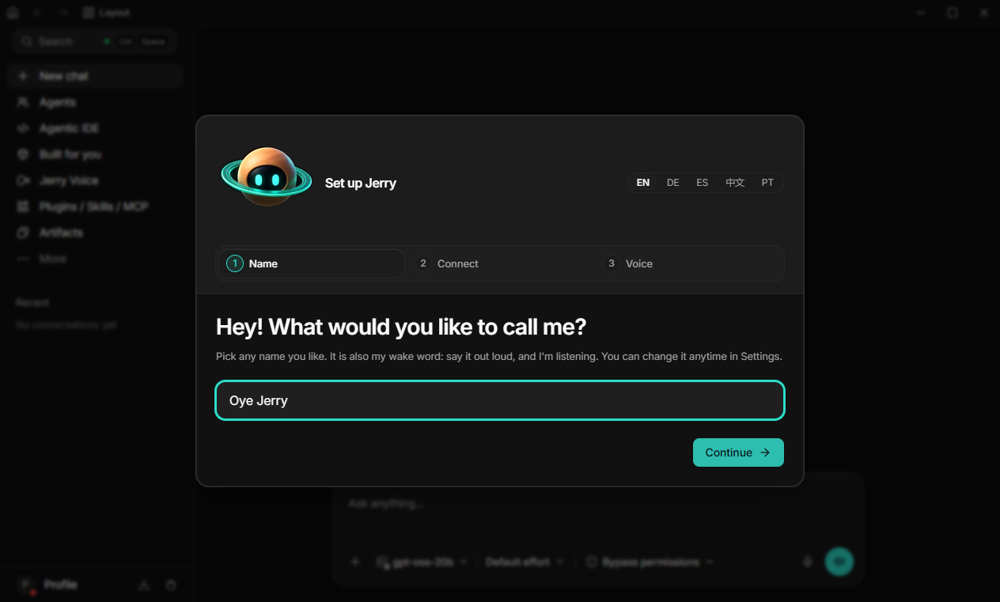

Voz
La palabra de activación es «oye Jerry». El nombre que se le pone en el primer paso es esa palabra, y se cambia en Ajustes. También se le puede escribir.
Jerry 4.1.2 · asistente de escritorio
Dices «oye Jerry» o escribes. Siete agentes trabajan en tu ordenador, con modelos locales y sin cuenta en la nube.


01 · Qué es
Jerry se abre en el ordenador. Coordina el navegador, las aplicaciones y los agentes de código, y hace el trabajo ahí.
La palabra de activación es «oye Jerry». El nombre que se le pone en el primer paso es esa palabra, y se cambia en Ajustes. También se le puede escribir.
Siete agentes. Cada uno tiene un trabajo y una cara. Saturn dirige, y es la cara con la que Jerry se presenta.
Los modelos son locales y privados. No hace falta una cuenta intermedia en la nube.
02 · El equipo
Saturn es la cara por defecto. La rejilla es la de Sopa: cinco gestos de cada cara. En cada ficha, el gesto de reposo, recortado de esa imagen.

Chat
La conversación. Le escribes o le hablas, y Sprout es quien está delante.

Director Por defecto
Coordina al equipo. Es la cara con la que Jerry abre.

Código
El código en el ordenador, y el enlace con los agentes de programación.

Documentos
Lee documentos y trabaja con ellos.

Archivos
Carpetas y archivos del ordenador.

Investigación
Busca.

Automatizaciones
Las tareas que se repiten.

03 · La ventana
La captura de arriba es la ventana real del programa. El cuadro del primer paso tapa el centro; la barra lateral y el campo de escritura ya están detrás.
La foto del escritorio de Windows, con otras ventanas alrededor, no se publica aquí. Esta es la ventana de Jerry.
04 · Cómo empezar
Esta página no reparte el instalador. El repositorio del producto es privado y las descargas viven en su release privada.
Hace falta acceso a github.com/ardu01/jerry. Ahí está la release con los instaladores, mientras siga siendo privada. La versión de esta página es la 4.1.2.
Al abrir, Jerry pregunta cómo quieres llamarle. Ese nombre es la palabra de activación. El ejemplo que trae es «Oye Jerry».
El asistente sigue con esos dos pasos. En la misma pantalla se elige el idioma: inglés, alemán, español, chino o portugués.
Dices «oye Jerry», o escribes. El equipo trabaja en el ordenador: navegador, aplicaciones y agentes de código.
05 · Licencias
Jerry, en conjunto, es solo la versión 3 de la GPL, no una posterior. Dentro caben dos piezas con su propia nota.
El programa se ofrece bajo la GNU GPL 3.0 únicamente. Esta web también: el texto y el código de la página, con copyright de Miguel Rodríguez Saiz.
Jerry deriva de Dodaios, publicado bajo la licencia Apache-2.0. El aviso se conserva en el repositorio del producto. Esta web no usa sus materiales de marca.
Saturn, Sprout, Circuit, Mirage, Alloy, Proton y Volt son las caras de Sopa, con licencia GPL. La rejilla, los recortes y el sprite de Saturn de esta página son esos archivos.
El tipo Inter es de The Inter Project Authors y va bajo la SIL Open Font License 1.1. El texto está en fonts/OFL.txt.